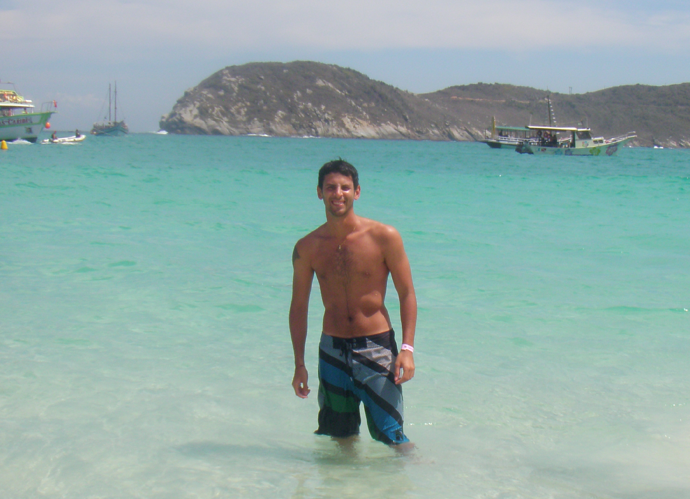
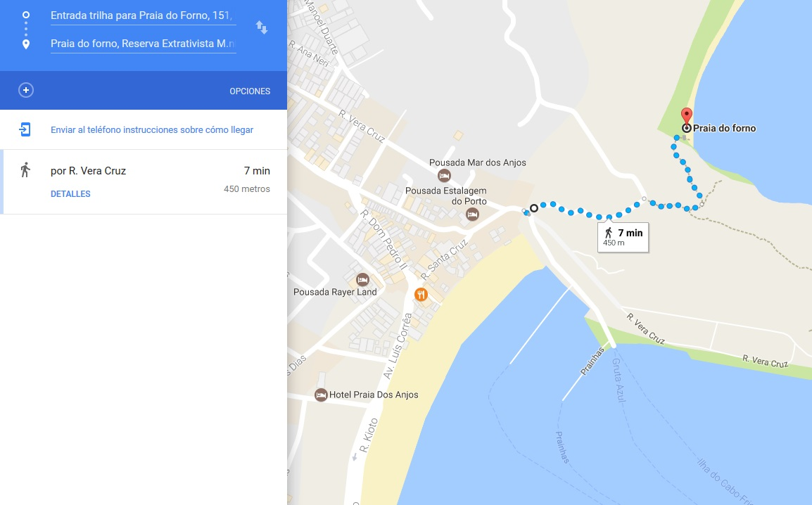

Praia do Forno, Arraial do Cabo, Brasil.
Definitivamente Arraial do Cabo es el lugar que me hizo sentir que estaba en el camino correcto, que el dinero en conocer lugares no se gasta sino que se invierte. Arraial do Cabo es la motivación por la cual surgieron todos mis otros viajes y fue el primer lugar al cual investigue e investigue antes de ir, llenándome de expectativas que fueron colmadas y superadas tan solo al pisar la arena y mirar el horizonte marítimo.
Algunos se animan a decir que Arraial do Cabo es el "Caribe Brasileño", una expresión tonta, absurda y hasta de mal gusto. Arraial do Cabo es Brasil y no tiene nada que envidiarle al Caribe. El agua es totalmente turquesa y cristalina, con peces y tortugas. La arena es una pasarela donde desfilan unos cangrejitos blancuzcos hermosos. Arraial do Cabo es un paraíso. Un paraíso al que todavía no ha llegado una ola de turistas, aunque cada año es más concurrido. El pueblo de esta ciudad es un lugar donde muy pocas personas se alojan, la mayoría llega desde Cabo Frío o Buzios (como hicimos nosotros). Las playas contienen un nivel de virginidad increíble y estar en ellas es sentirse en medio de una película donde nuestro barco naufrago y nos quedamos varados en una isla desierta. "Che, para... ¿No estarás exagerando mucho?" No, la verdad que no, compruébenlo por ustedes mismos en las siguientes líneas.
Praia do Farol, Arraial do Cabo, Brasil.
Antes de adentrarme en la descripción de las playas, es importante que sepan como llegar a Arraial do Cabo. Hay un montón de empresas que les van a ofrecer un tour donde los llevan y los traen desde Buzios, hagan oídos sordos. Lo mejor es ir en colectivo y volver en colectivo, es mucho más barato y es verdaderamente sencillo. La empresa encargada de unir a Buzios con Arraial do Cabo es Salineira, la cual tiene 5 horarios de ida y 5 horarios de vuelta que conectan directamente las dos ciudades. Cada pasaje cuesta actualmente 6,00. Una ganga, en comparación con lo que ofrecen las empresas de excursiones. Otro dato muy útil es que si no nos convencen los horarios que tiene la empresa desde Buzios a Arraial do Cabo o perdimos justo el colectivo que íbamos a tomar, tenemos la alternativa de tomarnos un colectivo a Cabo Frío, bajarnos en la parada indicada por el chófer y desde ese mismo sitio tomarnos otro a Arraial do Cabo y de vuelta lo mismo. La ventaja que tiene esta forma de viajar es que los colectivos que conectan a Buzios o a Arraial do Cabo con Cabo Frío tienen una mayor frecuencia.
Pueden conocer los horarios actualizados ingresando a Salineira y chequeando, en la pestaña de "Serviços" y luego clickeando en "Linhas e horários", la información de la línea B152 Arraial do Cabo / Buzios.
Es la playa más sencilla de visitar, desde el lugar donde nos bajamos del colectivo solo tenemos que cruzar la calle y ya estamos en ella. El primer día que visitamos Arraial do Cabo estaba muy nublado, yo venía observando por la ventanilla todo el pueblito y sobre todo el cielo. De repente el móvil cruzó una callecita pequeña y doblo a la izquierda, ahí todo cambio, se empezó a divisar un agua tan pero tan turquesa que rodeaba a unas cuantas embarcaciones que se encontraban detenidas en Dos Anjos. Todo lo que habíamos leído de Arraial do Cabo, había sido cierto. La arena, era como harina, suave y extremadamente fina.
La principal característica de Dos Anjos es que funciona como puerto de embarque, desde ahí, salen todas las barcas que van hacia las otras islas y también la excursión que te lleva a conocer playas no habitadas. Por este motivo, esta lleno de embarcaciones, las cuales tiran algunos residuos en el agua estropeando un poco el paisaje de ensueño. Sin embargo, es un lugar hermoso y una parada necesaria para adentrarse en el resto de Arraial do Cabo.
Recomendación: Hacer la excursión que sale desde Praia Dos Anjos y va a Praia do Farol, As prainhas y Praia do Forno es verdaderamente increíble. La misma se puede contratar directamente en la playa y no sale todo el tiempo, depende la cantidad de gente interesada en hacer el recorrido. El precio es sumamente regateable: Hay dos empresas que realizan la excursión y a veces juntan a la gente si el cupo es chico. Nosotros reservamos con una que no sumo mucha gente y nos derivaron a la otra. Al llegar a la nueva empresa me dijeron un precio, y ahí puse mi cara de póker y empece el regateo, explique que la otra empresa me había dejado a un precio mucho más barato y tras idas y vueltas terminaron accediendo al monto que era aproximadamente la mitad.
Sin exagerar, es una de las mejores playas que tuve la suerte de ver en mi vida junto y es el estimulo más grande para armar esta web. El sentimiento que tuve cuando conocí la Praia do Forno me hizo darme cuenta lo importante que era para mi conocer lugares nuevos. Desde ahí que cada vez que puedo, intento escaparme a donde sea.
Para llegar hay tres formas, una es contratando un barquito que hace de taxi y tarda unos pocos minutos, otra es contratando la excursión antes mencionada que es una opción muy recomendable ya que nos lleva también a otras playas. Y la mejor opción, a mi criterio, es hacer la conocida "Trilha" (o camino) que tiene una dificultad baja y regala la mejor vista panóramica de Praia do Forno. Lo que es cierto, es que el recorrido cuenta con unas escaleras en ascenso, si bien no son exigentes, todo depende del estado físico de cada uno. En solo 10 minutos se puede hacer tranquilamente. La entrada al camino se encuentra en la calle R. Vera Cruz, desde praia Dos Anjos se puede llegar muy fácilmente.
Caminata o "trilha" a Praia do Forno.
Junto con Mechi, fuimos tres veces a esta playa porque es simplemente perfecta. Agua totalmente cristalina, cangrejos revoloteando, algunos restaurantes con comida local, pero lo mejor de todo es que se encuentra entre morros lo cual da una sensación de estar totalmente aislado del mundo. Además, el color del agua nos invita a practicar snorkel con una visibilidad casi perfecta, donde podemos encontrar una gran cantidad de peces. En uno de los extremos se puede ver la única casa que da a la playa, la cual sigue siendo el hogar que anhelo y voy anhelar toda mi vida. Y si nos adentramos en el agua podemos llegar a un restaurante flotante muy lindo (las excursiones también llegan) donde se puede comer y luego disfrutar de un baño con las tortugas y peces que andan rondando por ahí. El nado con tortugas era algo que me interesaba mucho en mi viaje a Brasil y el mejor contacto lo tuvimos en los alrededores de este restaurante.
Praia do Forno tiene muchas ventajas y muy pocas desventajas, por no decir que tiene solamente una, la temperatura del agua, como en todo Arraial do Cabo es más baja que en Buzios y mucho más baja que playas del Caribe. Pero todo depende del umbral de frío que maneje cada uno. Yo me he bañado toda mi infancia en playas de aguas frescas como Mar del Plata, Santa Clara del Mar, Las Toninas y no he tenido ningún problema en Arraial do Cabo. Además les aseguro que con tanta belleza alrededor y tanta calidez humana brindada por los locales el frío no se siente.
Praia do Farol, Arraial do Cabo, Brasil.
Esta playa esta incluida en la excursión que podemos contratar en Praia dos Anjos. Praia do Farol se encuentra custodiada por la marina brasileña que debe dar la autorización para que los pasajeros de los barcos puedan arribar a la costa. Cuando nosotros fuimos, sucedió un hecho extraño que demoro la autorización y casi nos quedamos sin conocerla. Por suerte, se solucionó todo y la pudimos disfrutar.
Debido a los cuidados y a que no es una zona habitada, la playa se conserva casi virgen, es algo imponente a la vista humana. El ingreso a la vegetación que esta detrás de la arena esta cercada, el que manejaba el barquito nos explicó que ese lugar había sido un cementerio indígena y que por eso no se podía acceder a los caminos que se adentraban en el morro. Una historia de terror en medio del paraíso. En el lugar se permanece aproximadamente unos 40 minutos y luego el barco sigue el curso de la excursión hacia As prainhas.
Luego de visitar Praia do Farol, el barco se dirigió a As Prahinhas, parando a unos cuantos metros de la costa donde el capitán de la barquita nos invitó, al que quería, a tirarse al agua y nadar hasta la costa. Con Mechi nos miramos, pusimos un pie en la punta del barco y saltamos con fuerza a las profundidades cristalinas.
Esta playa contiene las mismas características que Praia do Farol y Praia do Forno en cuanto a la claridad del agua y lo finito de la arena. Es ideal para nadar, hacer snorkel y descansar. Un detalle que le da un toque especial es que se puede ver de fondo de la costa una escalera de madera infinita que lleva al morro, algo visualmente hermoso. Por falta de tiempo, también te dejan unos 40 minutos, no pudimos hacer ese recorrido. ¡Quedará para la próxima vez que visitemos Arraial!
Lo único que puedo decir es ¡GRACIAS ARRAIAL DO CABO! Me regalaste una nueva visión de la vida y un nuevo #DestinoPlaya que llevaré en mi corazón.